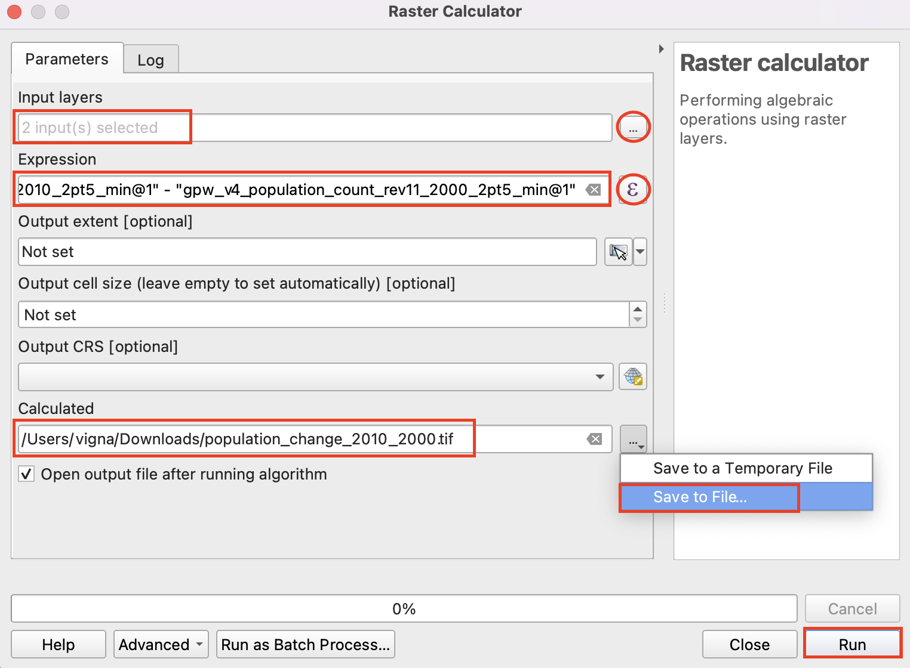

Ujaval Gandhi
Ujaval GandhiOsnovne analize in prikazi rastrov (QGIS3)¶
Veliko raziskav ustvari rastrske podatke. Raster je mreža celic, imenovanih piksli, ki so jim pripisane vrednosti. Z matematičnimi operacijami lahko s temi vrednostmi naredimo osnovne in napredne analize. QGIS ima osnovna orodja za računanje z rastri vgrajena v orodju Raster Calculator. V tej vadnici bomo raziskali osnove možnosti oblikovanja rastrskih slojev in zmogljivosti rastrskega računala.
Pregled naloge¶
Uporabili bomo podatke o gostoti prebivalcev in ustvarili tematsko karto s spremembami števila prebivalcev med leti 2000 in 2010.
Česa se bomo še naučili¶
Kako kopirati (copy/paste) sloge med sloji
Pridobivanje podatkov¶
Uporabili bomo podatkovni sloj Gridded Population of the World (GPW) v4, ki so ga pripravili na Columbia University. Natančneje, poiskali bomo sloj Population Count, ki za celotno Zemljo v ločljivosti 2,5 stopinje podaja podatke za leti 2000 in 2010 v zapisu GeoTIFF. Za prenos podatkov boste potrebovali brezlačen račun Earth Data account.

Kopijo podatkov lahko poberete tudi neposredno s spodnjega naslova:
gpw-v4-population-count-rev11_2000_2pt5_min_tif.zip
gpw-v4-population-count-rev11_2010_2pt5_min_tif.zip
Vir podatkov[GPW4]_
Postopek¶
Odprite QGIS in poiščite prenesene datoteke na orodni plošči Browser. Razširite datoteko
gpw-v4-population-count-rev11_2000_2pt5_min_tif.zipin povlecitegpw-v4-population-count-rev11_2000_2pt5_min.tifv glavno okno programa.

Na plošči Layers se pojavi nov sloj
gpw-v4-population-count-rev11_2000_2pt5_min. Po enakem postopku odprite datotekogpw-v4-population-count-rev11_2010_2pt5_min_tif.zipin v okno programa povlecitegpw-v4-population-count-rev11_2010_2pt5_min.tif.

Oglejmo si sloja. Kliknite gumb Identify v orodjarni Attributes Toolbar. Ko je orodje izbrano, kliknite katerokoli točko v glavnem oknu.

Vrednost, ki je shranjena v izbranem pikslu se bo izpisala na plošči Identify Results. Na plošči Identify Results spremenite Mode v
Top down. Tako bodo prikazane vrednosti pikslov vseh rastrov namesto samo zgornje plasti. Primerjajte vrednosti iz obeh plasti. Ker je ločljivost rastrov približno 5 km x 5 km, vrednosti pikslov predstavljajo skupno populacijo na območju (25 kvadratnih kilometrov).

Zaprite ploščo Identify Results. Ustvarimo boljši prikaz obeh slojev. Kliknite gumb Open the layer Styling panel v plošči Layers.

Na plošči Layer Styling kliknite padajoče polje Render type in izberite način prikaza
Singleband pseudocolor.

This renderer will style the layer using a color ramp. The default color ramp is white-red where the minimum value will be assigned the white color and the maximum value in the layer will be assigned the red color. The intermediate values will be assigned a shade of red linear interpolation. Expand the Min / Max Value Settings and choose
Cumulative count cutoption. You will see that the map visualization is much better now. The standard data range is set from 2% to 98% of the data values, meaning that the outliers will not be used to set the minimum and maximum values, resulting in a much more representative visualization.

Zaprite ploščo Layer Styling. Enako oblikovanje lahko nastavimo tudi za drugi prikazani sloj. Obstaja pa lažji način prenosa oblikovanja iz enega sloja na drugega. Desno kliknite sloj
gpw-v4-population-count-rev11_2010_2pt5_minin izberite .

Desno kliknite neoblikovani sloj
gpw-v4-population-count-rev11_2000_2pt5_minin izberite .

Enaki parametri oblikovanja bodo uporabljeni za drugi sloj. Ta funkcija je še posebej uporabna, če želite primerjati različne sloje z isto kategorizacijo. Ko preklapljate vidnost zgornje plasti, lahko takoj opazite spremembe v populaciji.

Our task is to create a thematic map of the changes in population. Let’s compute the difference between the 2 layers and create another raster where each pixel represents the change in the population. Go to .

Look for Raster Calculator under Raster Analysis and double-click to open the tool.

Select both the layers using … button as Input Layers. The raster calculator can apply mathematical operations on the raster pixels. In this case we want to enter a simple formula to subtract the 2010 population from 2000. Enter the following expression using ε button. In the expression, The bands are named after the raster name followed by
@and band number. Since each of our rasters have only 1 band, you will see the names with@1appended to the layer name. Keep all the other options as default and save the output layer with the namepopulation_change_2010_2000.tifand click Run.
"gpw_v4_population_count_rev11_2010_2pt5_min.tif@1" - "gpw_v4_population_count_rev11_2000_2pt5_min.tif@1"
Ko bo računanje zaključeno, se bo v plošči Layers pojavil nov sloj
population_change_2010_2000. Spremenimo prikaz tako, da bodo jasneje vidne negativne in pozitivne spremembe prebivalstva. Kliknite gumb Open the layer Styling panel na plošči Layers.

Ena od možnosti je uporaba podobnega prikaza kot predhodno in izbira drugačne barvne lestvice. Kliknite padajoči meni Color ramp in izberite lestvico
Spectral. Ponovno kliknite padajoči meni in izberiteInvert Color Ramp, s čimer boste modre odtenke priredili nizkim vrednostim, rdeče pa visokim.

Vizualizacija je dobra, vendar ni preprosta za interpretacijo. Ustvarimo boljšo karto s 4 diskretnimi kategorijami:
Upad,Rastin``Hitra rast``. Premaknite se do tabele z razredi. Držite tipko Shift in izberite vrstice. Kliknite gumb Remove selected row(s).

Spremenite način Interpolation v
Discrete. Barvno lestvico bomo ustvarili ročno. Kliknite gumb Add values manually. Vpišite-100kot Value in``Upad`` kot Label. Kategoriji pripišite modro barvo. Kategorizacija vse vrednosti, ki so manjše od vpisane vrednosti prikaže z izbrano barvo. Na karti bodo prikazane samo vrednosti negativnih sprememb prebivalstva.

Ustvarite barvno karto s primernimi vrednostmi. Recimo
100,1000in100000kot gornje vrednosti za kategorijeNevtralno,RastinHitra rast. Ustrezno obarvajte ustvarjene kategorije, recimo bež, oranžno in rdeče.

Ko ste s prikazom zadovoljni, zaprite ploščo Layer Styling. Ustvarili ste tematsko karto sprememb prebivalstva.

If you want to give feedback or share your experience with this tutorial, please comment below. (requires GitHub account)